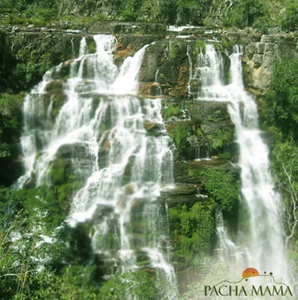
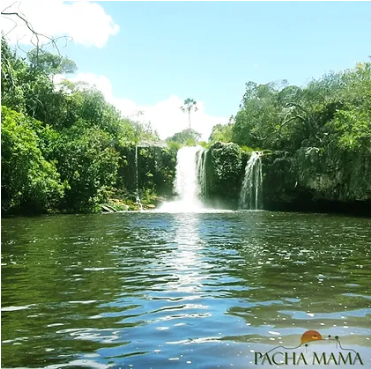
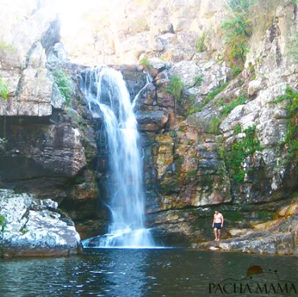
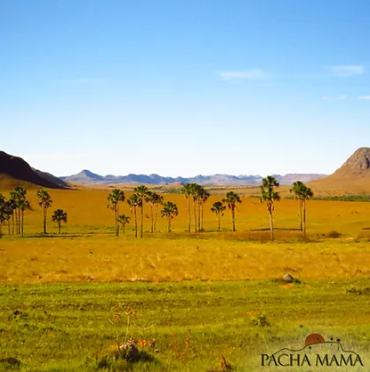
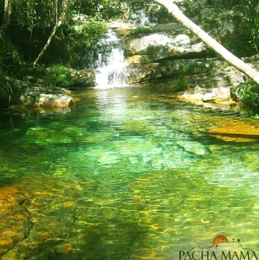
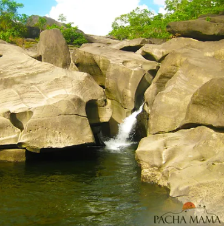

Attractions
ALMECEGAS I AND II WATERFALLS
1.8 km and 300 m trail. Before arriving at Almécegas I you can see the waterfall from the front, it is a beautiful view and it is also possible to take a bath, it falls in the shape of a wedding veil, 45 meters high. Deep, green and crystal clear waters. Almécegas II is not that big, but its well is big and deep and the trail is easy. It is 9 km from PachaMama.
SAO BENTO WATERFALL
Short trail of 200 m. It is formed by the Couros River and has a large, deep natural pool for swimming, as well as some small pools for swimming in during the dry season. It is 9 km from PachaMama.
ANJOS E ARCANJOS WATERFALL
The trail of more than 2 km is not long, but difficult. Two great waterfalls, although their waters are very clean, they are dark in color like Coca-Cola due to the high concentration of tannin (vegetable compound), creating a beautiful effect in the sunlight. It is 12 km from Alto Paraíso in the village of Moinho.
MAYTREA GARDEN
It's a viewpoint that gives access to a beautiful view of the typical Cerrado paths. It is one of the most beautiful landscapes to be photographed at sunset. It is common to see macaw and toucan nests. The place is valued by mystics for the wealth of crystal in the soil. It is 4 km from PachaMama.
LOQUINHAS WATERFALL
There are 2 trails of less than 1 km each. It's all covered, which makes access much easier, especially for children and the elderly. A series of small waterfalls and wells with crystal clear, emerald green water also has wooden stairs to facilitate access to the waters. It is 22km from PachaMama.
VALLEY OF THE MOON
600m trail. The São Miguel River flows between rocks that impress with their colors and sculptural shapes, carved by the force of the waters over time. Probably the main postcard of Chapada dos Veadeiros. Great place for swimming with a beautiful view. 14 km from PachaMama.